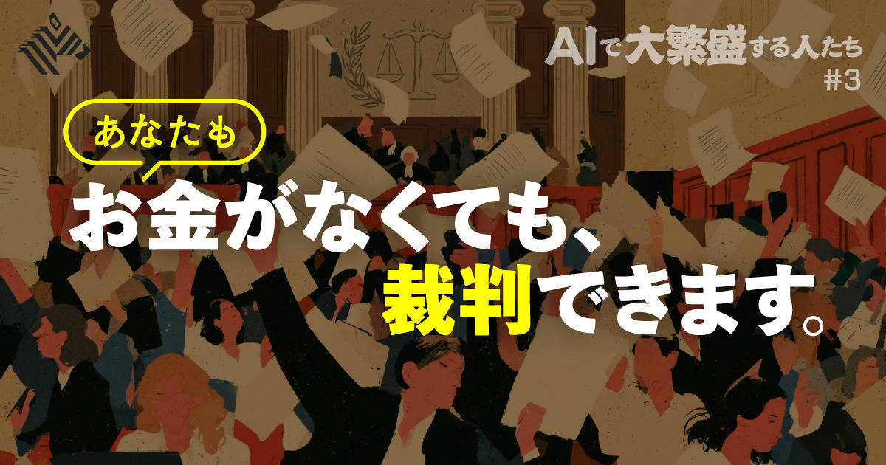
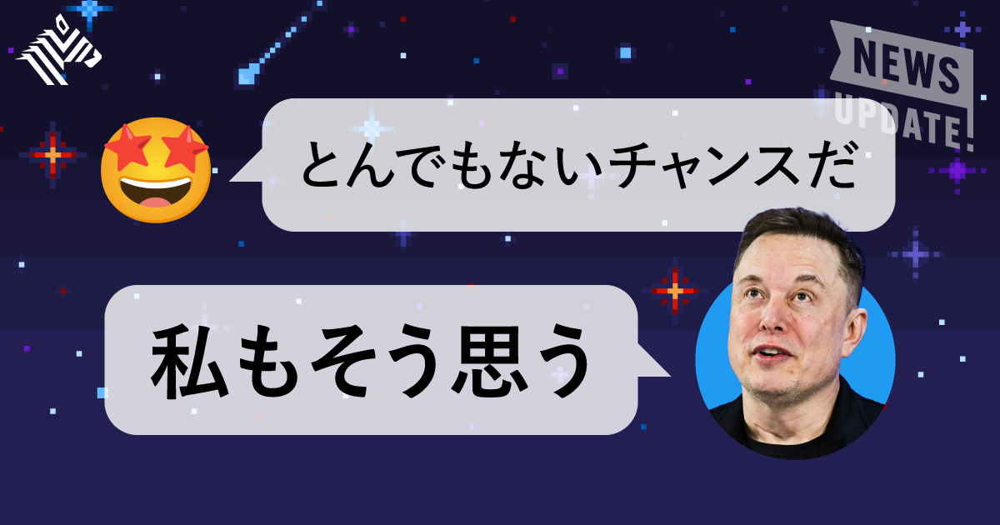
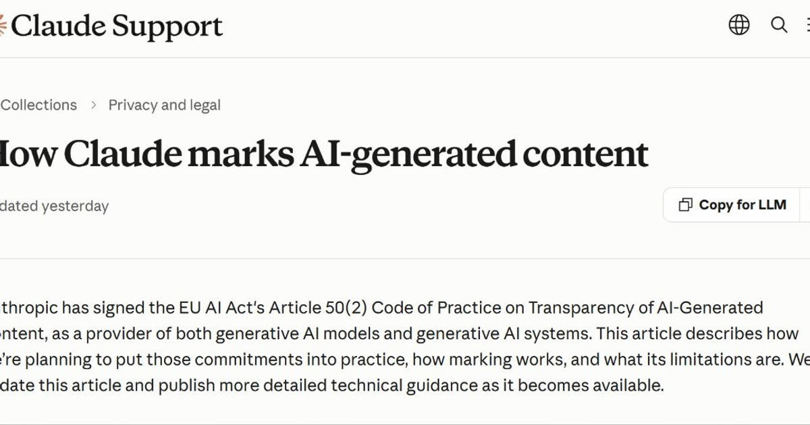
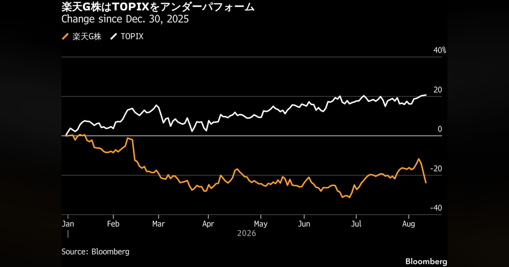

記事別メモ
1. 【激増中】AIによる「弁護士なし訴訟」がヤバい
発行日時: 2026/08/12 05:30 JST
あなたに関係ありそうな理由: AIで書類作成の入口が下がるほど、業務効率だけでなく、最終判断の責任、相談先、誤りが起きた時の救済をどう設計するかが実務課題になるから。
生成AIが、これまで弁護士や専門家に頼らなければ作りにくかった訴状や申立書の作成を身近にし、「弁護士なし訴訟」を増やしているという記事である。米国では自力で民事訴訟を進める当事者の件数が、2022年の約2万3000件から2025年には約4万1000件へ増えたと紹介される。別の分析では、2019～2022年に集めた800件の訴訟文書でAIらしい表現が見られた割合は0.1％だったのに対し、2025年には10％超になったという。英国では、AIを使った異議申立書作成サービスが登場し、行政審判所で扱う案件が急増して、他の審理が遅れる懸念も示された。市民にとっては、費用や専門用語が障壁だった手続きを始めやすくなる利点がある。記事で紹介されるサービスには、計画申請への異議文を24時間で99ポンドで作るものや、訴訟費用のクラウドファンディングを支援するものがある。国や企業がAIを使い、市民もAIで対抗する「AIによる軍拡競争」の様相がある。
一方、文書が整って見えても、事実関係、提出期限、管轄、手続き上の例外までは保証されない。記事は、AIの助言を信じて受診を遅らせた事例や、存在しない判例を引用した弁護士が問題となった例にも触れる。AIが作る文章のもっともらしさは、法的な正確さの証明ではない。NewsPicksのコメントでは、日本では弁護士法72条との関係を慎重に考えるべきだという論点と、低額案件を含む紛争解決の受け皿をAIネイティブに作るべきだという期待が並んだ。裁判所の処理能力が追いつかなければ、アクセス改善が新たな遅延にもつながる。重要なのは、AIで相談の入口を開くことと、専門家の確認が必要な地点を曖昧にしないことだ。事業で文書生成を導入するなら、誰が事実を確認し、どの時点で専門職へ渡し、根拠と版をどこに残すかを先に決めたい。市民利用でも、AIを「答えを出す弁護士」ではなく、論点を整理して相談の準備をする道具として扱う方が、安全性と利用価値を両立しやすい。効率化の評価では作成時間だけでなく、誤りを発見できる導線と、誤った時に立ち戻れる記録があるかを見る必要がある。利用者にとっても、何をAIへ入力してよいか、相手方や裁判所へ提出する前に何を自分で確認するかを分けることが欠かせない。アクセスを広げる技術ほど、相談・確認・提出の境界をわかりやすくする必要がある。

仕事や会話で使える一言: AIで入口を広げるほど、最終確認を誰が担うかを先に設計する必要があります。
NewsPicks原文を読む
2. 【激動の3日間】スペースXが「半値」になってしまった
発行日時: 2026/08/12 05:30 JST
あなたに関係ありそうな理由: 成長企業を評価する時、未来像の大きさと、投資額・契約・資金回収という足元の検証を分けて見る感覚が役立つから。
スペースXの上場直後の株価が大きく揺れた三日間を通じて、宇宙企業が通信とAIの投資会社としても評価され始めていることを描く記事である。6月12日に株価225ドルで上場した後、8月上旬には104ドルまで下げ、135ドルへ戻した。4～6月期の売上高は前年比ほぼ2倍の78億1400万ドルだった一方、5400万ドルの損失も計上した。記事は事業を、宇宙、Starlinkによる通信、AIの三本柱として整理する。通信部門は売上高の55％を占め、契約者は1200万人と前年の約2倍になった。米政府向けのStarshieldも、民間通信とは別の需要を支える。AIでは、Anthropicとの三カ月で16億ドル規模の契約やGoogleとの契約が紹介され、衛星通信会社の物語だけでは収まらない。
市場が注目したのは、将来の成長より先に出ていく資金の大きさだった。設備投資は183億7000万ドルで前年比約6倍、約9割がAI向けだった。最高財務責任者は下期も同水準の投資を見込む。利益率が高い通信の拡大と、AI基盤への巨額投資が同時に進むため、損益計算書だけでは投資の重さを判断できない。8月4～6日にはロックアップ解除も重なり、需給と不安が株価を増幅した。NewsPicksのコメントでは、通信が既存の通信大手へ与える影響、企業価値の約7割をAIが占めるという見立て、投資額に見合うキャッシュ回収の道筋を確かめるべきだという視点が出た。成長株を読む時は、AIという言葉を評価の根拠にせず、何に投資し、どの契約で回収し、いつまでに利用者と売上が増えるのかを分けることが大切だ。スペースXの場合は、Starlinkの加入者、政府・民間の契約、AI設備投資の継続額、そして衛星通信の競争環境が次の確認点になる。通信加入者の増加が高収益の基盤をどこまで支えるかと、AI投資が将来の契約へどう結び付くかは、同じ指標では測れない。加えて、通信の地上事業者との競争やサービス開始時期が、契約獲得の前提を左右する。宇宙、通信、AIの三つを一つの成長率で扱わず、それぞれの投資回収の速度を確かめると判断を誤りにくい。派手な値動きは結論ではなく、投資家がどの前提を疑い始めたかを示す材料として読みたい。

仕事や会話で使える一言: 大きな投資は、物語ではなく、契約・利用者・回収時期に分けて確かめます。
NewsPicks原文を読む
3. Anthropic、「Claude」で生成したテキストに“見えない透かし” 日本を含むグローバルに適用へ
発行日時: 2026/08/12 09:37 JST
あなたに関係ありそうな理由: AIを業務で使う場面が増えるほど、「使ったか」だけでなく、どの工程で関与し、何を人が確認したかを説明できることが信頼に直結するから。
Anthropicが、Claudeで生成したテキストへ人には見えない機械可読の電子透かしを入れ、画像などのファイルにはC2PA準拠の署名付き来歴メタデータを付ける方針を示した。8月10日に更新したサポートページで説明され、EU AI Actの透明性義務に関する行動規範への署名を踏まえた対応だが、対象はEU域内だけではない。日本を含む、Claudeを提供する世界の地域とプロダクトに適用する。2026年8月2日以降にリリースされるモデルから対応し、Claude PlatformのAPI、Claude、Claude Code、Cowork、Tagの出力が対象になる。AWS、Google Cloud、Microsoft Foundry経由で対応モデルを使う場合も、テキストの透かしは適用される。
テキストの透かしは、人間には知覚できず、応答の意味、品質、読みやすさを変えないとされる。コピー＆ペースト後も残り、一部の編集を経ても保持される場合がある。一方、PNGやJPG、SVGなどのファイルに付けるC2PAの来歴メタデータは、改ざんの有無を検出できる署名付き情報である。ここで誤解してはいけないのは、透かしが見つかっただけで内容の作者や正しさが証明されるわけではないことだ。校正、翻訳、要約だけにClaudeを使った場合にも印が付き得る。逆に、大幅な編集、言い換え、変換、スクリーンショットなどで信号やメタデータが失われる可能性があり、印がないこともAI不使用の証明にはならない。現時点で一般利用者や第三者が検出する方法は準備中とされる。
NewsPicksのコメントでは、技術仕様が十分に示されないと「AIが関与した可能性」以上の意味を読み込まれかねないという指摘や、最終校正でAIを使った人間の文章までAI生成と扱われる懸念が出た。監査や安全書類で本当に必要なのは、AIの印だけでなく、人が現場を確認した記録だという意見も重要である。組織では、AI利用の可否を二択にせず、生成、校正、翻訳、調査のどこで使ったかを申告・確認できる工程にすることが現実的だ。透かしはその証跡を補う信号であり、説明責任を丸ごと代替するものではない。今後は検出精度、編集への耐性、誤解された時の扱い、外部ツール経由の情報保持まで見ていきたい。

仕事や会話で使える一言: AI利用の印は出発点で、信頼を支えるのは人の確認工程まで説明できることです。
NewsPicks原文を読む
4. あふれるAI生成画像、脳への影響と対処法
発行日時: 2026/08/12 05:20 JST
あなたに関係ありそうな理由: AI画像が仕事・家族・SNSの情報環境に混ざる中、見抜く技術だけでなく、感情を煽る投稿にどう反応しないかという習慣づくりに役立つから。
生成AIで作られた画像や動画が日常のフィードに増え、真偽を見分ける負担が脳や社会にどう及ぶかを考える記事である。生成画像は、広告、政治、ニュース、個人投稿の境目をまたいで流通し、実在の人物のように見える架空のインフルエンサーや、詐欺へつながる投稿も生まれている。画像・動画生成モデルの質が上がるほど、専門家でさえ一目で判別することは難しくなる。記事で紹介される専門家は、人間の脳が、危険を素早く察知するために進化してきた一方、画面上の情報を毎回、事実かどうか精査するようにはできていないと説明する。真偽を決める前に感情が動けば、怒り、恐怖、驚きを利用する投稿が広がりやすい。AI生成物が大量に出回る環境では、すべてを疑い続けること自体が疲労にもなる。
対処は、万能な判定器を探すことではない。記事は画像の光、影、反射、遠近感、手や背景の不自然さに目を向ける方法を挙げる。ただし、それだけで結論は出せない。場所が重要なら地図やストリートビューで照合し、投稿者のアカウント作成時期、投稿頻度、他の投稿、反応を煽る文言も確かめる。投稿を見た瞬間に強い感情が湧いたなら、共有や反論の前に一度立ち止まり、「これは何をさせたい投稿なのか」と問うことが有効だ。怒りを集めるためだけのragebaitは、正しさを争うほど拡散を助ける場合がある。判断に時間をかけられない時ほど、結論を保留し、確かな出典が確認できるまで行動しないという選択が有効になる。
NewsPicksのコメントでは、AIが人間の欺きの規模をほぼゼロのコストで拡張し、情報を無条件に信じる前提が壊れるという危機感が語られた。同時に、全部を見破る責任を個人へ背負わせないことも必要だ。家族や職場では、怪しい投稿を見た時に恥をかかせるためのクイズにせず、出典、撮影場所、投稿目的を一緒に確かめる習慣にしたい。重要な判断は、画像一枚の印象で進めず、一次情報や複数の独立した情報源へ戻る。生成物を見抜けたかではなく、誤情報に反応して行動する前に確認の時間を取れたかを、情報リテラシーの基準にする方が持続する。確証が持てない情報を「未確認」と扱えることも、情報過多の環境では大切な判断力である。
仕事や会話で使える一言: 強い感情を動かす画像ほど、拡散する前に出典と目的を一度確かめます。
NewsPicks原文を読む
5. 楽天G株が急落、2Q営業益が市場予想下振れ－モバイル事業に課題の声
発行日時: 2026/08/12 09:24 JST
あなたに関係ありそうな理由: 新規事業の黒字化を見る時、単独損益だけでなく、設備投資、品質、既存事業との相乗効果をどう測るかを考える材料になるから。
楽天グループの株価が、4～6月期の営業利益が市場予想を下回ったことを受けて急落した。記事によると、株価は前日比12％安の761円となった。四半期の営業利益は200億円で、市場予想の344億円に届かなかった。一方、純利益は77億円となり、四半期として約6年ぶりの黒字だった。焦点は楽天モバイルである。モバイル事業の損失は440億円で、前年同期の454億円から改善したが、通信網の投資と品質を巡る論点が残る。新規事業が赤字を縮めながら全社黒字へ近づく局面では、改善の方向と、投資負担がどれだけ続くかの両方を見る必要がある。
野村証券は、物流事業の減損を除けば業績は良好としながらも、KDDIのローミング契約が10月に終わる見込みで、ネットワーク品質への影響を課題として挙げた。基地局建設の能力次第では、楽天側の設備投資計画を達成しにくい可能性もある。ローミングは自社網が十分でない地域を補う手段であり、契約の縮小・終了は、自前の設備で通信品質を維持できるかという検証へ重心を移す。収益性だけではなく、利用者にとって通信が使えるか、設備投資が予定どおり進むかが事業価値に直結する。
NewsPicksのコメントでは、モバイル単体の黒字・赤字だけでなく、楽天経済圏全体で生む利益と費用を見なければならないという見方が出た。通信は金融、EC、広告などへの接点としての戦略価値を持ち得る。その一方で、その価値を理由に品質や投資の問題を先送りにはできない。経済圏の利用頻度や顧客生涯価値がどれほど伸びるのか、モバイルの加入者増が他サービスの利益へどう波及するのかを、数字で確かめる必要がある。株価急落は、事業が失敗したという即断ではなく、市場が想定した改善ペースと実績の差を映している。今後はモバイルの損失縮小、基地局整備、KDDIローミング後の通信品質、そして経済圏全体の収益性を分けて追いたい。決算では黒字化の有無に加えて、通信品質を保つための追加投資と、利用者数の伸びが同じ速度で進むかを見たい。品質の変化を解約や継続利用の指標と併せて追う視点も欠かせない。戦略的な入口であるほど、利用者が実感する品質と、投資の回収根拠を同時に説明できるかが問われる。

仕事や会話で使える一言: 戦略的な赤字は、品質・投資・相乗効果を数字で説明できて初めて評価できます。
NewsPicks原文を読む